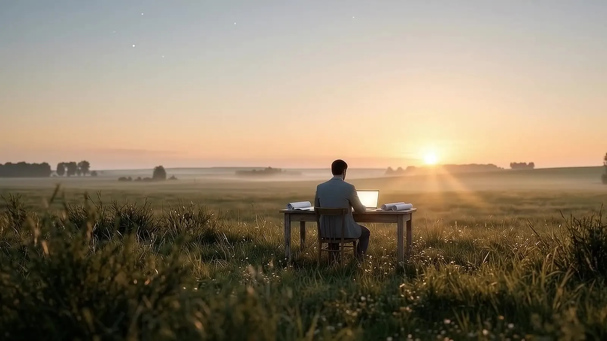
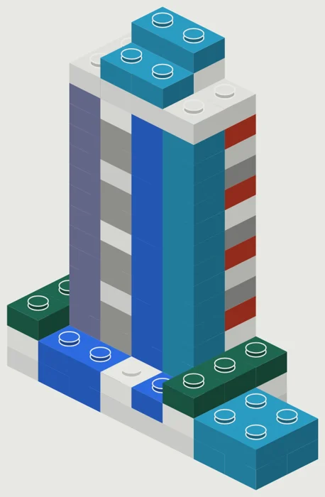

Architect · Projects Director, House of Cosmos
Akshit Suraj Parmar
What I believe
Most buildings are sold. Mine are meant to breathe.
I think of a building as a living system. It should make some of its own energy, reuse its own water, keep things growing on it and be made of materials that cost the planet less. Built right, it keeps getting better after we leave.
All of that costs more on day one. And on day one, nobody pays a developer for water that will be saved in year eight. That is the skewed incentive in my industry, and it is why so many cities are turning into glass boxes.
I build for year eight anyway. Here is the first test.
Three pilots
I test every belief on something real.
One is a building. One is the company that builds it. One is a rooftop that is already open. Each has a bet, a way to measure it, and its own page where I keep score.

Pilot 01 · Trividh
Handover 2028Can a building keep its gardens green when the city runs dry?
An art deco building that cleans and reuses 90% of its own grey and rainwater, with nests built into its side wall.
See the pilot →
Pilot 02 · Autopilot
Running since mid 2026Can House of Cosmos run a month without me making a day-to-day decision?
Rules from my hotel check-ins, a dashboard for every customer, and a team that builds its own systems.
See the pilot →Pilot 03 · Common Grounds
Status OpenCan a rooftop give people a reason to stay?
Coffee, pickleball and padel, open six to two. My side business, and the most successful thing I run.
See the pilot →My father
Everyone is a king of their own lives. So when you meet someone, talk as if two kings are speaking.
Suraj Parmar said that, and I still repeat it word for word: to buyers, to contractors, to my team.
He also gave me the water. His Blue Revolution was a push for grey water harvesting, years before anyone in our industry was paid to care about it. Trividh's water plant carries it on.
House of Cosmos is the next chapter of the Cosmos legacy, founded in 2000 by Suraj Parmar and now led by his sons, Ar. Akshit Suraj Parmar and Abhishek Parmar, building on the principles he was known for. Since 2000, the Cosmos legacy has delivered 60,000+ homes.
The weekly letter
The letter I write to my family. Now open to you.
Every Monday I write to my family and close friends about building, business and life. It is the most honest account of what I am working on, and it costs nothing.
Systems you can use. The rules and systems behind House of Cosmos, written so you can run them in your own company.
The numbers, first. Trividh and Autopilot results reach the letter before they reach this site.
How I think. Philosophy, family, and how the places we build should treat the people in them.
If you searched for me
The quick answers.
Who is Akshit Suraj Parmar?
I am an architect and real estate developer, registered with the Council of Architecture. I did my Master's in design and construction in the Netherlands. I am Projects Director at House of Cosmos, which I run with my brother Abhishek, and I am running three pilots: Trividh, Autopilot and Common Grounds.
Are you Suraj Parmar's son?
Yes. My father started the Cosmos legacy in 2000. House of Cosmos is its next chapter, run by my brother and me.
What are your pilots?
Three bets I am testing in public. Pilot 01, Trividh: a building that cleans and reuses its own water, handing over in 2028. Pilot 02, Autopilot: running House of Cosmos on systems, so that it can go a month without me making a day-to-day decision. Pilot 03, Common Grounds: my side business, a rooftop with coffee, pickleball and padel, built so people choose to stay.
What is Trividh?
A House of Cosmos residential building in Naupada. Art deco design, bird nests built into the facade, and a water system that reuses 90% of its grey and rainwater. The pilot page has the full bet.
How do I reach you?
Call the House of Cosmos office on +91 99202 79296 or email contact@houseofcosmos.co. If you want to meet, ask for me. I will be on time.